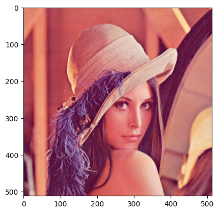
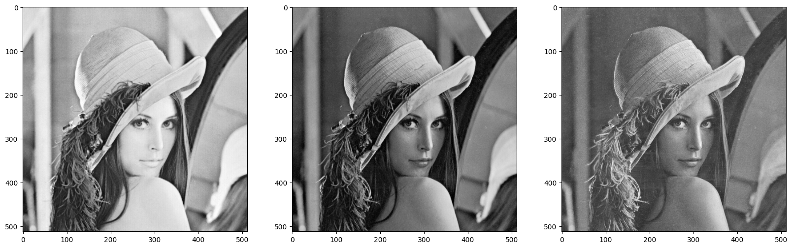
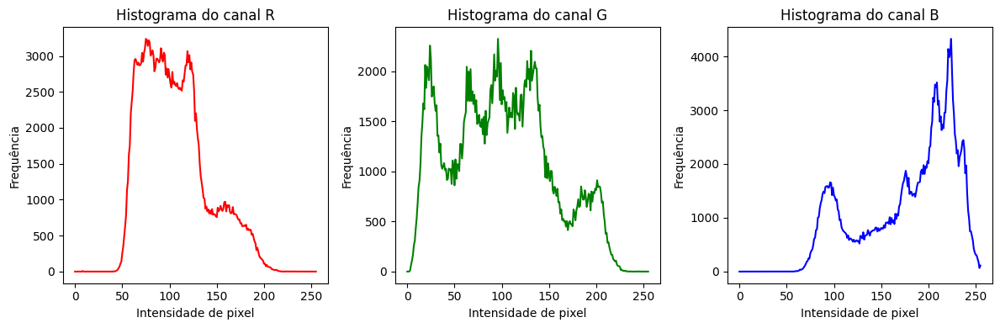
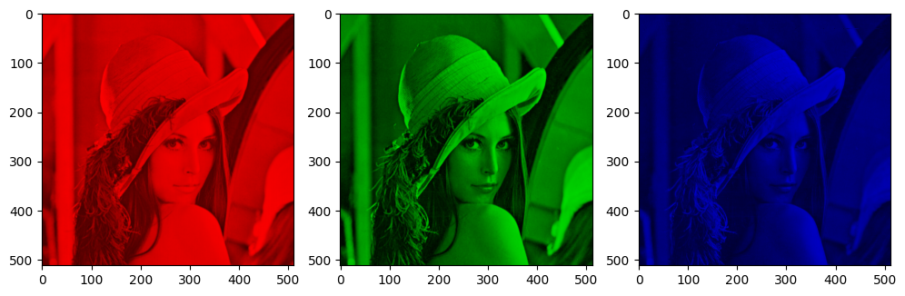
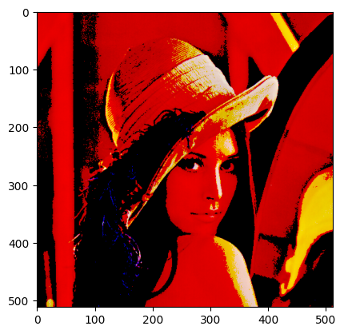
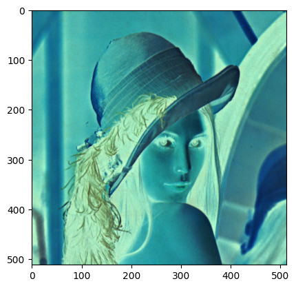
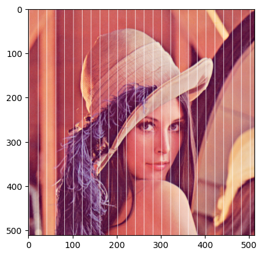
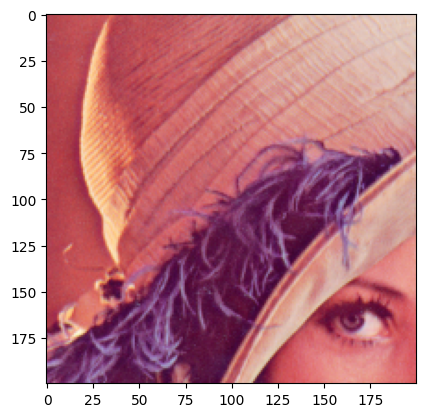

Fundamentos de Imagens Digitais em Python (Demo)#
Visão Computacional#
Prof. Dr. Denis Mayr Lima Martins#
import cv2
import numpy as np
import matplotlib.pyplot as plt
from urllib.request import urlopen
# No Google Colab, use o comando abaixo
#from google.colab.patches import cv2_imshow
A module that was compiled using NumPy 1.x cannot be run in
NumPy 2.2.5 as it may crash. To support both 1.x and 2.x
versions of NumPy, modules must be compiled with NumPy 2.0.
Some module may need to rebuild instead e.g. with 'pybind11>=2.12'.
If you are a user of the module, the easiest solution will be to
downgrade to 'numpy<2' or try to upgrade the affected module.
We expect that some modules will need time to support NumPy 2.
Traceback (most recent call last): File "<frozen runpy>", line 198, in _run_module_as_main
File "<frozen runpy>", line 88, in _run_code
File "/opt/anaconda3/lib/python3.11/site-packages/ipykernel_launcher.py", line 17, in <module>
app.launch_new_instance()
File "/opt/anaconda3/lib/python3.11/site-packages/traitlets/config/application.py", line 992, in launch_instance
app.start()
File "/opt/anaconda3/lib/python3.11/site-packages/ipykernel/kernelapp.py", line 701, in start
self.io_loop.start()
File "/opt/anaconda3/lib/python3.11/site-packages/tornado/platform/asyncio.py", line 195, in start
self.asyncio_loop.run_forever()
File "/opt/anaconda3/lib/python3.11/asyncio/base_events.py", line 607, in run_forever
self._run_once()
File "/opt/anaconda3/lib/python3.11/asyncio/base_events.py", line 1922, in _run_once
handle._run()
File "/opt/anaconda3/lib/python3.11/asyncio/events.py", line 80, in _run
self._context.run(self._callback, *self._args)
File "/opt/anaconda3/lib/python3.11/site-packages/ipykernel/kernelbase.py", line 534, in dispatch_queue
await self.process_one()
File "/opt/anaconda3/lib/python3.11/site-packages/ipykernel/kernelbase.py", line 523, in process_one
await dispatch(*args)
File "/opt/anaconda3/lib/python3.11/site-packages/ipykernel/kernelbase.py", line 429, in dispatch_shell
await result
File "/opt/anaconda3/lib/python3.11/site-packages/ipykernel/kernelbase.py", line 767, in execute_request
reply_content = await reply_content
File "/opt/anaconda3/lib/python3.11/site-packages/ipykernel/ipkernel.py", line 429, in do_execute
res = shell.run_cell(
File "/opt/anaconda3/lib/python3.11/site-packages/ipykernel/zmqshell.py", line 549, in run_cell
return super().run_cell(*args, **kwargs)
File "/opt/anaconda3/lib/python3.11/site-packages/IPython/core/interactiveshell.py", line 3051, in run_cell
result = self._run_cell(
File "/opt/anaconda3/lib/python3.11/site-packages/IPython/core/interactiveshell.py", line 3106, in _run_cell
result = runner(coro)
File "/opt/anaconda3/lib/python3.11/site-packages/IPython/core/async_helpers.py", line 129, in _pseudo_sync_runner
coro.send(None)
File "/opt/anaconda3/lib/python3.11/site-packages/IPython/core/interactiveshell.py", line 3311, in run_cell_async
has_raised = await self.run_ast_nodes(code_ast.body, cell_name,
File "/opt/anaconda3/lib/python3.11/site-packages/IPython/core/interactiveshell.py", line 3493, in run_ast_nodes
if await self.run_code(code, result, async_=asy):
File "/opt/anaconda3/lib/python3.11/site-packages/IPython/core/interactiveshell.py", line 3553, in run_code
exec(code_obj, self.user_global_ns, self.user_ns)
File "/var/folders/p7/p37cm2fj10xgjrjj5rzdm66c0000gn/T/ipykernel_55212/3822878402.py", line 3, in <module>
import matplotlib.pyplot as plt
File "/opt/anaconda3/lib/python3.11/site-packages/matplotlib/__init__.py", line 161, in <module>
from . import _api, _version, cbook, _docstring, rcsetup
File "/opt/anaconda3/lib/python3.11/site-packages/matplotlib/rcsetup.py", line 27, in <module>
from matplotlib.colors import Colormap, is_color_like
File "/opt/anaconda3/lib/python3.11/site-packages/matplotlib/colors.py", line 57, in <module>
from matplotlib import _api, _cm, cbook, scale
File "/opt/anaconda3/lib/python3.11/site-packages/matplotlib/scale.py", line 22, in <module>
from matplotlib.ticker import (
File "/opt/anaconda3/lib/python3.11/site-packages/matplotlib/ticker.py", line 143, in <module>
from matplotlib import transforms as mtransforms
File "/opt/anaconda3/lib/python3.11/site-packages/matplotlib/transforms.py", line 49, in <module>
from matplotlib._path import (
---------------------------------------------------------------------------
AttributeError Traceback (most recent call last)
AttributeError: _ARRAY_API not found
---------------------------------------------------------------------------
ImportError Traceback (most recent call last)
Cell In[1], line 3
1 import cv2
2 import numpy as np
----> 3 import matplotlib.pyplot as plt
4 from urllib.request import urlopen
File /opt/anaconda3/lib/python3.11/site-packages/matplotlib/__init__.py:161
157 from packaging.version import parse as parse_version
159 # cbook must import matplotlib only within function
160 # definitions, so it is safe to import from it here.
--> 161 from . import _api, _version, cbook, _docstring, rcsetup
162 from matplotlib.cbook import sanitize_sequence
163 from matplotlib._api import MatplotlibDeprecationWarning
File /opt/anaconda3/lib/python3.11/site-packages/matplotlib/rcsetup.py:27
25 from matplotlib import _api, cbook
26 from matplotlib.cbook import ls_mapper
---> 27 from matplotlib.colors import Colormap, is_color_like
28 from matplotlib._fontconfig_pattern import parse_fontconfig_pattern
29 from matplotlib._enums import JoinStyle, CapStyle
File /opt/anaconda3/lib/python3.11/site-packages/matplotlib/colors.py:57
55 import matplotlib as mpl
56 import numpy as np
---> 57 from matplotlib import _api, _cm, cbook, scale
58 from ._color_data import BASE_COLORS, TABLEAU_COLORS, CSS4_COLORS, XKCD_COLORS
61 class _ColorMapping(dict):
File /opt/anaconda3/lib/python3.11/site-packages/matplotlib/scale.py:22
20 import matplotlib as mpl
21 from matplotlib import _api, _docstring
---> 22 from matplotlib.ticker import (
23 NullFormatter, ScalarFormatter, LogFormatterSciNotation, LogitFormatter,
24 NullLocator, LogLocator, AutoLocator, AutoMinorLocator,
25 SymmetricalLogLocator, AsinhLocator, LogitLocator)
26 from matplotlib.transforms import Transform, IdentityTransform
29 class ScaleBase:
File /opt/anaconda3/lib/python3.11/site-packages/matplotlib/ticker.py:143
141 import matplotlib as mpl
142 from matplotlib import _api, cbook
--> 143 from matplotlib import transforms as mtransforms
145 _log = logging.getLogger(__name__)
147 __all__ = ('TickHelper', 'Formatter', 'FixedFormatter',
148 'NullFormatter', 'FuncFormatter', 'FormatStrFormatter',
149 'StrMethodFormatter', 'ScalarFormatter', 'LogFormatter',
(...)
155 'MultipleLocator', 'MaxNLocator', 'AutoMinorLocator',
156 'SymmetricalLogLocator', 'AsinhLocator', 'LogitLocator')
File /opt/anaconda3/lib/python3.11/site-packages/matplotlib/transforms.py:49
46 from numpy.linalg import inv
48 from matplotlib import _api
---> 49 from matplotlib._path import (
50 affine_transform, count_bboxes_overlapping_bbox, update_path_extents)
51 from .path import Path
53 DEBUG = False
ImportError: numpy.core.multiarray failed to import
def url_to_image(url, readFlag=cv2.IMREAD_COLOR):
# download the image, convert it to a NumPy array, and then read
# it into OpenCV format
resp = urlopen(url)
image = np.asarray(bytearray(resp.read()), dtype="uint8")
image = cv2.imdecode(image, readFlag)
# return the image
return image
img = url_to_image("https://upload.wikimedia.org/wikipedia/en/7/7d/Lenna_%28test_image%29.png")
img = cv2.cvtColor(img,cv2.COLOR_BGR2RGB)
plt.imshow(img)
plt.show()
# No Google Colab, use o comando abaixo
# cv2_imshow(img)

print('Num. linhas em pixels: ', img.shape[0])
print('Num colunas em pixels: ', img.shape[1]) #Colunas da imagem
print('Qtde de canais: ', img.shape[2])
print("Min pixel:", img.min(), "| Max pixel:", img.max())
Num. linhas em pixels: 512
Num colunas em pixels: 512
Qtde de canais: 3
Min pixel: 3 | Max pixel: 255
Plotando canais#
figure, axarr = plt.subplots(1,3, figsize=(20,20))
axarr[0].imshow(img[:,:,0], cmap= 'gray')
axarr[1].imshow(img[:,:,1], cmap= 'gray')
axarr[2].imshow(img[:,:,2], cmap= 'gray')
plt.show()

img = url_to_image("https://upload.wikimedia.org/wikipedia/en/7/7d/Lenna_%28test_image%29.png")
img = cv2.cvtColor(img,cv2.COLOR_BGR2RGB)
# Extrai os três canais da imagem
b, g, r = cv2.split(img)
# Calcula o histogram por canal
def histograma_canal(canal, cor, nome):
"""Calcula o histograma de um canal e cria um plot para ele."""
hist = cv2.calcHist([canal], [0], None, [256], [0, 256]) # 256 bins
plt.plot(hist, color=cor)
plt.title(f'Histograma do canal {nome}')
plt.xlabel('Intensidade de pixel')
plt.ylabel('Frequência')
# Plota os histogramas
plt.figure(figsize=(12, 4))
plt.subplot(1, 3, 1)
histograma_canal(r, 'r', 'R')
plt.subplot(1, 3, 2)
histograma_canal(g, 'g', 'G')
plt.subplot(1, 3, 3)
histograma_canal(b, 'b', 'B')
plt.tight_layout()
plt.show()

Zerando canais#
colors = ("r", "g", "b")
plt.figure(figsize=(10,5))
for i, col in enumerate(colors):
split_img = np.zeros(img.shape, dtype="uint8") # Matrix de zeros
plt.subplot(1, 3, i+1)
split_img[ :, :, i] = img[ :, :, i]
plt.imshow(split_img)
plt.tight_layout()
plt.show()

Zerando pixels específicos na imagem#
img = url_to_image("https://upload.wikimedia.org/wikipedia/en/7/7d/Lenna_%28test_image%29.png")
img = cv2.cvtColor(img,cv2.COLOR_BGR2RGB)
img1 = img
img1[img1 < 180] = 0
# Use a linha abaixo para zerar pixels com intensidade < 180 apenas no canal R
#img1[img1[:, :, 0] < 180] = 0
plt.imshow(img1)
plt.show()
# No Google Colab, use o comando abaixo
# cv2_imshow(img)

Imagem Negativa#
img = url_to_image("https://upload.wikimedia.org/wikipedia/en/7/7d/Lenna_%28test_image%29.png")
img = cv2.cvtColor(img,cv2.COLOR_BGR2RGB)
img2 = 255 - img
plt.imshow(img2)
plt.show()
# No Google Colab, use o comando abaixo
# cv2_imshow(img)

Modificando partes da imagem#
imagem = url_to_image("https://upload.wikimedia.org/wikipedia/en/7/7d/Lenna_%28test_image%29.png")
imagem = cv2.cvtColor(img,cv2.COLOR_BGR2RGB)
for y in range(0, imagem.shape[0], 20): # Percorre linhas
for x in range(0, imagem.shape[1], 20): # Percorre colunas
imagem[y:y+20, x+2] = (255, 255, 255)
imagem = cv2.cvtColor(imagem,cv2.COLOR_BGR2RGB)
plt.imshow(imagem)
plt.show()
# No Google Colab, use o comando abaixo
# cv2_imshow(img)

Crop#
img = url_to_image("https://upload.wikimedia.org/wikipedia/en/7/7d/Lenna_%28test_image%29.png")
img = cv2.cvtColor(img,cv2.COLOR_BGR2RGB)
recorte = img[100:300, 100:300] #f(x,y)
plt.imshow(recorte)
plt.show()
# No Google Colab, use o comando abaixo
# cv2_imshow(recorte)
# cv2.waitKey(0)
# cv2.destroyAllWindows()
# Salva a nova imagem
cv2.imwrite("recorte.png", recorte) #salva no disco

True